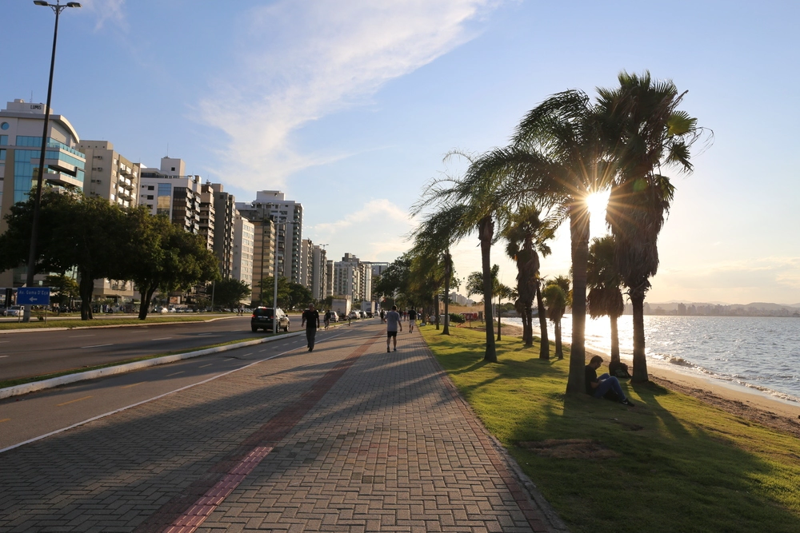
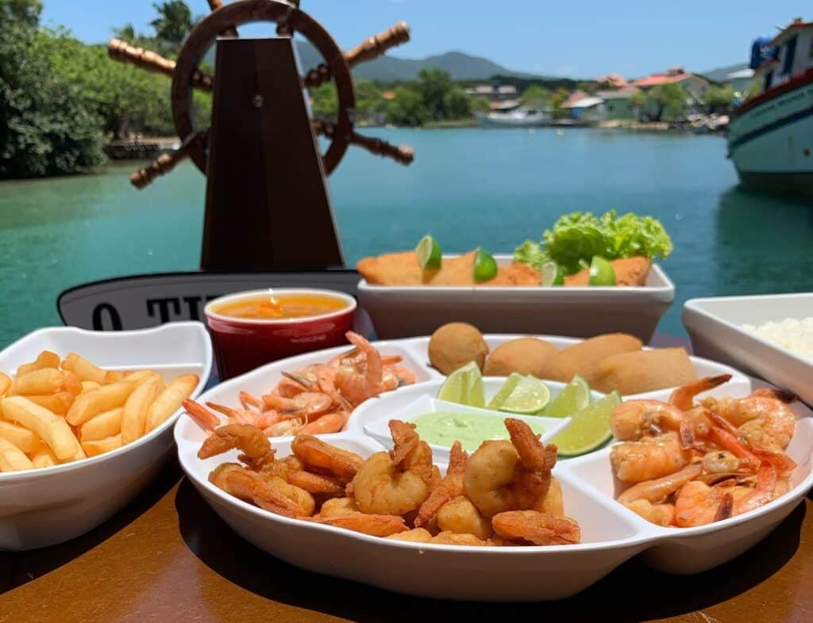

Comemorar meu aniversíario de 18 anos em um lugar especial.
Onde Me Hospedei?
Nesta viagem, fiquei hospedada em um Airbnb, próximo a beira-mar, no bairro Agronômica.

Onde Visitei?
Visitei pontos túristicos como o Mercado Público, Museu Histórico de Santa Catarina, Ponte Hercilio Luz e várias praias, como Lagoinha do Norte e a praia da Daniela.
Gastronomia Local
Durante a viagem, pude experimentar algumas comidas tipicas manézinhascomo ostras. A gastronomia da cidade de Florianópolis é majoritariamente composta por frutos do mar, por se tratar de uma ilha.

Dicas para quem vai para a Ilha da Magia pela primeira vez!
Vou para Florianópolis e não conheço nada. E agora?
Floripa é linda demais e, mesmo sem conhecer nada, você vai se apaixonar. Pra te ajudar a começar, siga essas dicas:
Alugue um carro para facilitar o deslocamento.
Experimente a gastronomia local, especialmente frutos do mar.
Conheça o centro e o Mercado Público.
Evite horários de pico para fugir do trânsito.
Prepare-se para se encantar, Florianópolis vai ficar na sua memória!